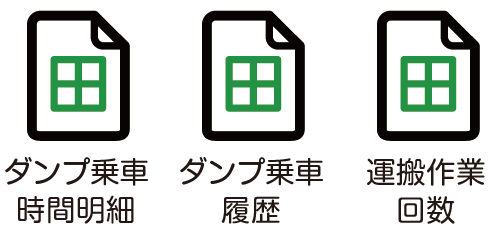

事例
2
とある印刷会社の場合
スーパーのチラシの作成にあたって、クライアントから提供されるエクセルデータにはチラシ掲載商品の情報が300件くらい入っているが、その商品名はチラシ掲載用のものではない事があるので、WEBでJANコードを検索して商品パッケージからデータの商品名を書き換える必要があった。
●各作業員から日報の提出（紙）

●事務員がエクセルで日報の集計を入力
●毎月手作業で各種集計作業

●上司に提出
各作業員がスマホから日報を入力し、各種集計から、上司提出までを自動化し、作業時間が0分に。
●各作業員から日報の提出（スマホ）
●各種集計から、上司への提出までをプログラムで自動化。